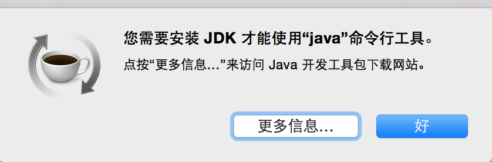

Yosemite：安装和修复开发环境
OS X Yosemite昨天如期而至，更新自不待说。有了上次升级OS X Yosemite Beta失败的经验，这次在按下那个大大的继续之前，先用Time Machine做了一个备份。
等待的过程尤其漫长，论坛上看到很多人都卡在大约剩余2分钟。我倒是没有出现这种情况，我只是卡在大约剩余1分钟而已(._.)。在安装界面使用CMD+L可以看到系统在不断拷贝texlive的文件，也算是蛮拼的了。
大约一个半小时后，锵锵，全新的OS X长这样。

然后就是修复我的开发环境，毕竟还要靠它赚钱吃饭呐。
- Xcode CLT
CLT每次升级系统都会出现问题，所以首先要xcode-select --install来同意Xcode的一个啥啥啥协议。另外因为我装的是Xcode-Beta，所以还要下面的命令来指定我的Xcode路径。
sudo xcode-select -switch /Applications/Xcode-Beta.app/Contents/Developer/
- Java
Java也是每次升级系统都会出现问题，就像这样

点击更多信息会跳转到Apple的网站，把那里面的Java安装包装一下就好。
- Homebrew
Homebrew的话使用brew doctor测一下就好，我倒是没出现什么问题。这里倒是有个修复Homebrew的文章。
然后就是brew update、brew upgrade、brew cleanup，升级一下各种包。
至此就是Yosemite的初体验，更多新的特性（Handoff, Continuity…）还在试用中，以后再写好了。